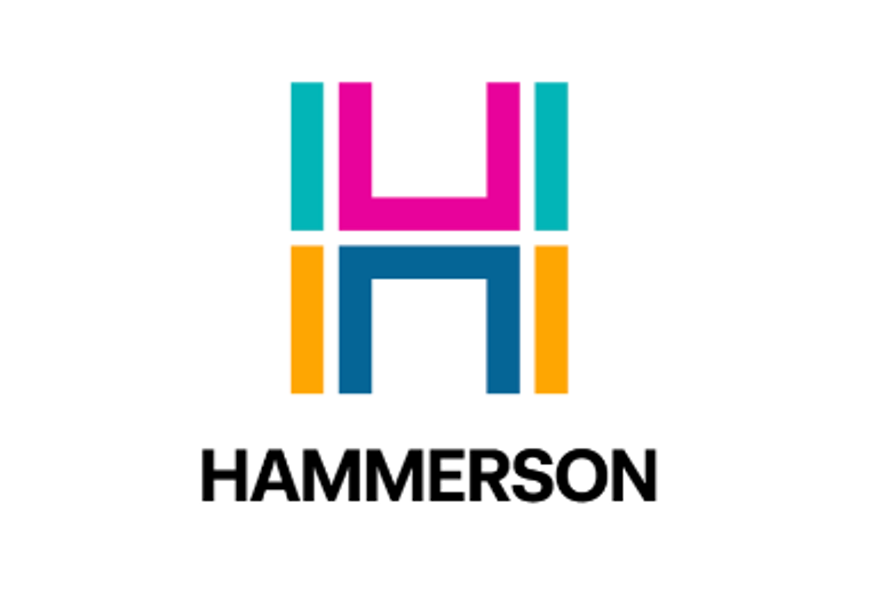
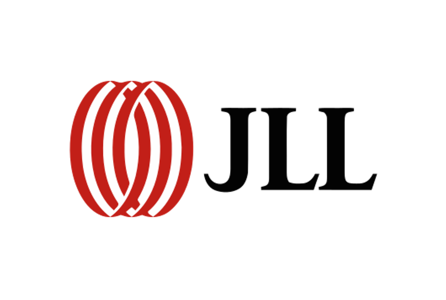
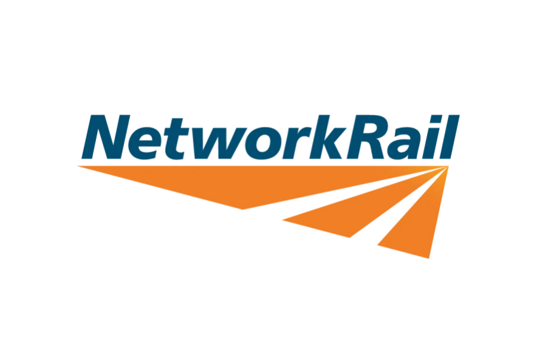
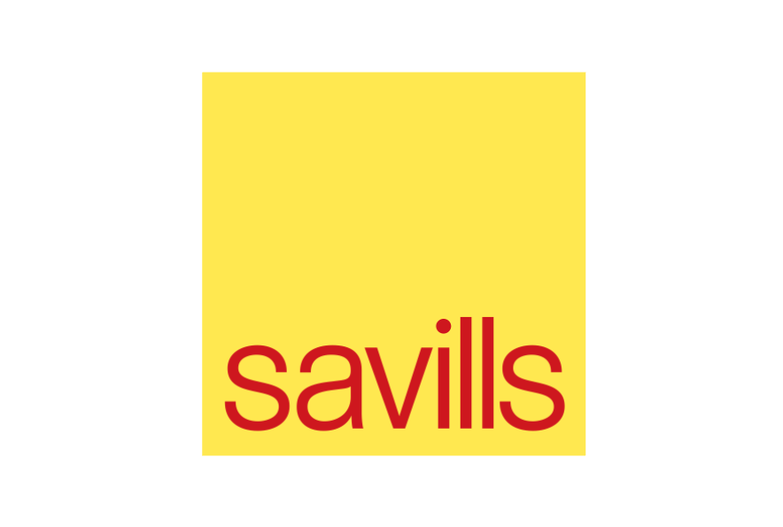
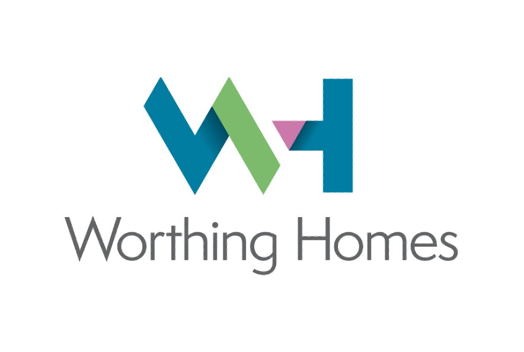
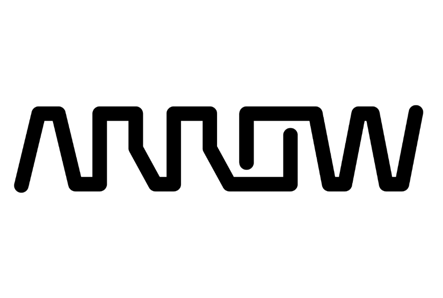
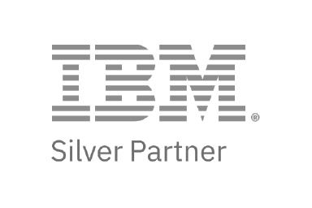
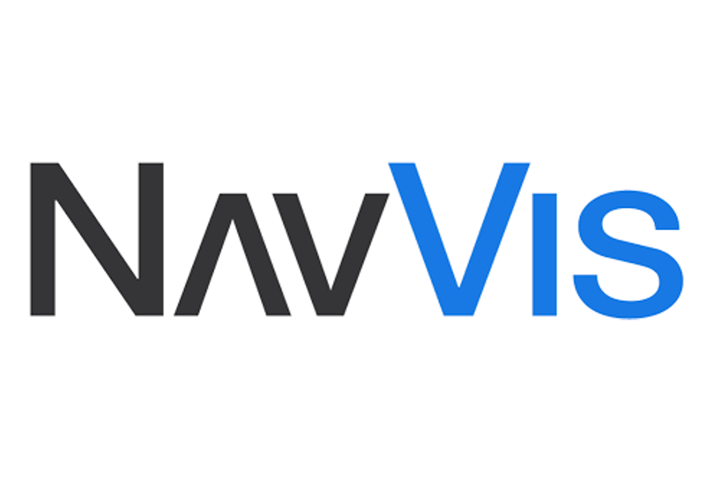

Complex Data
at a
Glance
Understand operations through the places where they happen. Helios connects your physical environment with the information needed to understand and manage it.
One spatial view of your physical environment
Explore point clouds, panoramic imagery, maps and location-aware information through one familiar interface. Connect operational systems, IoT and content where they add value—without making any one integration a prerequisite.
Built to Simplify, Designed to Scale
Explore HeliosGraphQL for IBM Maximo
by Visualise Info
Visualise Info developed GraphQL for IBM Maximo to give Helios and other applications a more flexible, consistent way to access, navigate and update Maximo information.
Explore GraphQL for IBM MaximoIndustries We Serve.
We support a wide range of industries where operational visibility and proactive decision-making are critical.
-
Remote site monitoring for hard-to-access assets:
Track and manage equipment in remote or hazardous locations through IoT-enabled digital twins.
-
Predictive maintenance for critical infrastructure:
Prevent failures in turbines, transformers, and substations with real-time sensor insights.
-
Grid and pipeline visibility:
Consolidate multiple assets and sites into a unified 3D view for better oversight and planning.
-
Faster response to outages or anomalies:
Role-based, context-aware data enables field teams to act quickly and accurately during incidents.
-
Capital efficiency in asset management:
Extend the lifespans of expensive infrastructure while optimising maintenance spending.
-
Compliance and safety monitoring:
Continuously track conditions to support regulatory reporting and ensure workforce safety.
-
Vegetation monitoring:
Use IoT sensors and 3D visualisation to identify hazards (like encroaching vegetation) before they disrupt rail services.
-
Accessible journey planning:
Provide real-time travel information and planning tools that support inclusive, accessible experiences for all passengers.
-
Predictive maintenance:
Overlay live sensor data on trains and rail infrastructure to anticipate faults and reduce downtime.
-
Remote monitoring of depots and lines:
Manage hard-to-reach or hazardous rail assets without on-site visits by using IoT-enabled digital twins.
-
Incident & disruption response:
Equip staff with role-based insights for faster, safer decision-making during service interruptions.
-
Regulatory compliance:
Continuously track and visualise operational conditions to meet strict rail safety standards.
-
Full facility visibility:
Gain a unified 3D view of your entire facility's layout, assets, and systems to improve uptime and reduce production delays.
-
Predictive equipment maintenance:
Anticipate and prevent machine failures on the factory floor with IoT sensor alerts, reducing unplanned downtime.
-
Operational efficiency:
Identify and address bottlenecks by visualising workflows in real time, leading to more efficient production processes.
-
Workplace safety & compliance:
Monitor critical safety parameters (temperature, pressure, air quality, etc.) to maintain a safe work environment and meet regulatory standards.
-
Reduced operating theatre downtime:
Real-time monitoring ensures surgical theatres are always ready for patients and clinical teams, minimising idle time.
-
Improved patient safety:
Live data overlays highlight risks and support proactive decision-making in high-pressure healthcare environments.
-
Energy efficiency:
Optimise energy, lighting, and equipment usage with continuous monitoring, reducing waste and operating costs.
-
Role-based insights for staff:
Deliver the right information at the right time to each user, so clinicians and managers can act quickly and accurately in their roles.
-
Predictive equipment maintenance:
Prevent failures of surgical tools and critical infrastructure before they cause disruptions to care.
-
HVAC monitoring (HTM03 compliance):
Continuously track and control operating theatre air-handling systems in real time. Perform ventilation inspections remotely to ensure compliance with HTM03 standards and reduce theatre downtime.
-
Real-time vessel monitoring:
Track vessel performance, conditions, and location through a unified digital twin for a complete real-time operational picture.
-
Port & dock asset management:
Visualise critical dockside equipment and port infrastructure in 3D for more efficient maintenance and oversight.
-
Instant documentation access:
Geolocate work orders, compliance records, and manuals directly in their spatial context, allowing crew to pull up relevant documents by clicking on the asset in the 3D model.
-
Predictive maintenance:
Prevent costly downtime on ships and port machinery with IoT-driven condition monitoring and alerts.
-
Safety and compliance:
Continuously track operations against maritime regulations and safety standards to enhance operational compliance.
-
Unified operations platform:
Integrate vessel, port, and logistics data into one spatially-aware system for streamlined maritime operations management.
-
Situational awareness for remote sites:
Unify IoT sensor readings and asset data into one real-time spatial platform, giving a complete overview of operations across remote and high-risk locations.
-
Fewer site visits:
Monitor pipelines, rigs, and processing facilities remotely with live data overlays and digital twins, greatly reducing the need for costly on-site inspections.
-
Improved worker safety:
Provide role-based, context-aware insights that minimise worker exposure in hazardous environments (e.g. offshore platforms, refineries).
-
Predictive failure prevention:
Leverage IoT-driven analytics to predict equipment issues before they happen, cutting downtime and maintenance costs.
-
Faster onboarding & training:
Use immersive 3D visualisations to accelerate workforce training and readiness, helping new employees become effective quickly while maintaining compliance.
-
Stronger regulatory compliance:
Continuously monitor conditions to meet strict safety and environmental standards, strengthening compliance and accountability.
Why Visualise Info?
At Visualise Info, we bridge the gap between complex enterprise systems
and the people who use them.
Our visual-first platform lets you navigate your physical environment, access data in context, and take
action through an intuitive 3D interface, turning live operational data into
clear, actionable insight
that scales from individual facilities to global portfolios.
Spatial Intelligence
Connect assets, buildings, systems, and data in an intuitive visual interface.
Contextual Insight
Transform live sensor and system data into real-time understanding that drives confident, informed decisions.
Scalable Platform
Adapt seamlessly from single-site deployment to enterprise-wide transformation.
Transformational Outcomes
Empower teams to see, decide, and act faster, turning visibility into measurable impact.
Partner With Visualise Info.
Enhance your enterprise asset management offerings with Helios, a platform built for clarity and control.
We partner with consultancies, integrators, and resellers to deliver visual-first solutions that integrate
with leading EAM systems and other enterprise tools.
As a Visualise Info partner, you can expand your services, offer more value to clients, and share
in our success.
(Our technical team works hand-in-hand with partners to support deployment and tailor Helios to each
client's needs.)
- Broaden your portfolio by delivering Helios-powered spatial experiences, IoT integrations, and connected operational workflows.
- Support clients with Helios deployment, integration projects, and managed services.
- Differentiate your consultancy by embedding Helios into clients' digital transformation roadmaps, providing clear spatial tools that connect people, place, and information.
- Connect Helios with the operational systems and information clients already use.
- Continue to add value with training, change management, and monitoring services centred around Helios.
About Visualise Info.
We are a UK-based software company transforming how enterprise organisations interact with data.
We specialise in visualising complex asset and sensor information in a way that's intuitive, interactive, and spatially aware.
Our Mission.
Simplify complexity, connect insight, and empower transformation at every level.
Built on deep expertise in EAM, IoT, and visualisation, our platform turns disconnected data into
clarity that drives confident, measurable decisions.
Our Clients.










Our Partnerships.



Resources.
Explore our growing library of case studies, white papers, and videos
to
learn
how
Visualise Info transforms data into operational clarity.
Topics include:
- Bridging the Digital Literacy Gap
- Enterprise Asset Visualisation with Maximo
- Real-Time IoT Monitoring in Action